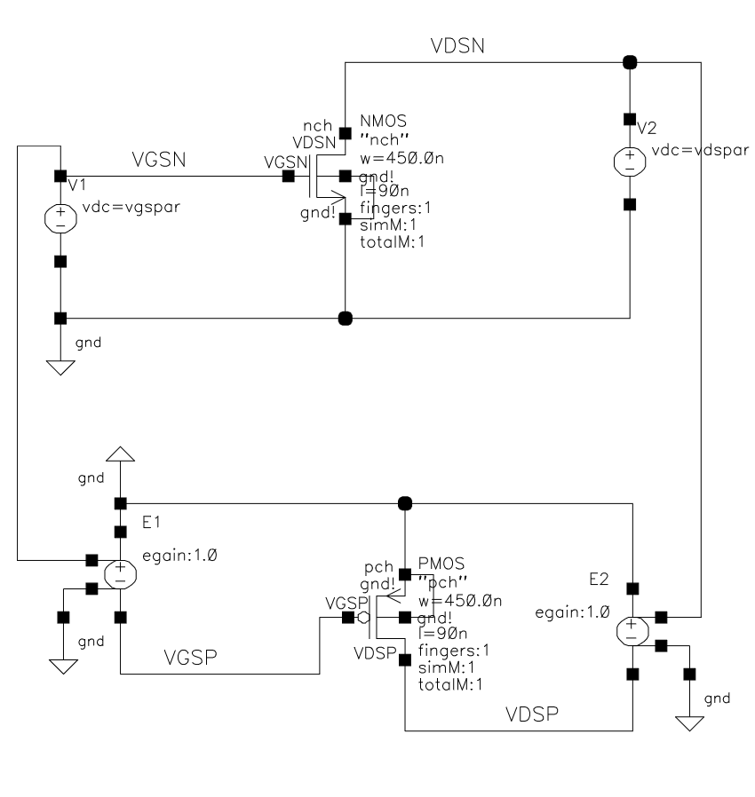
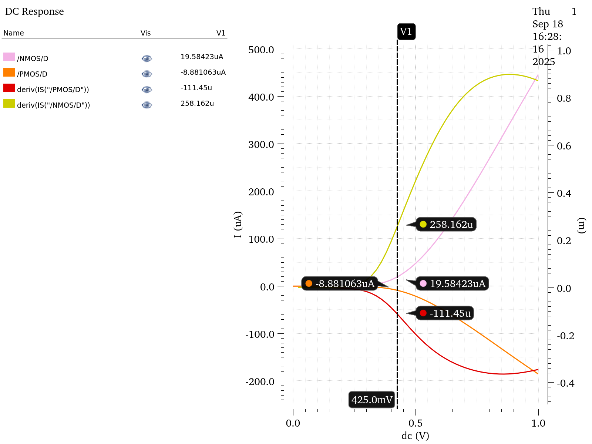
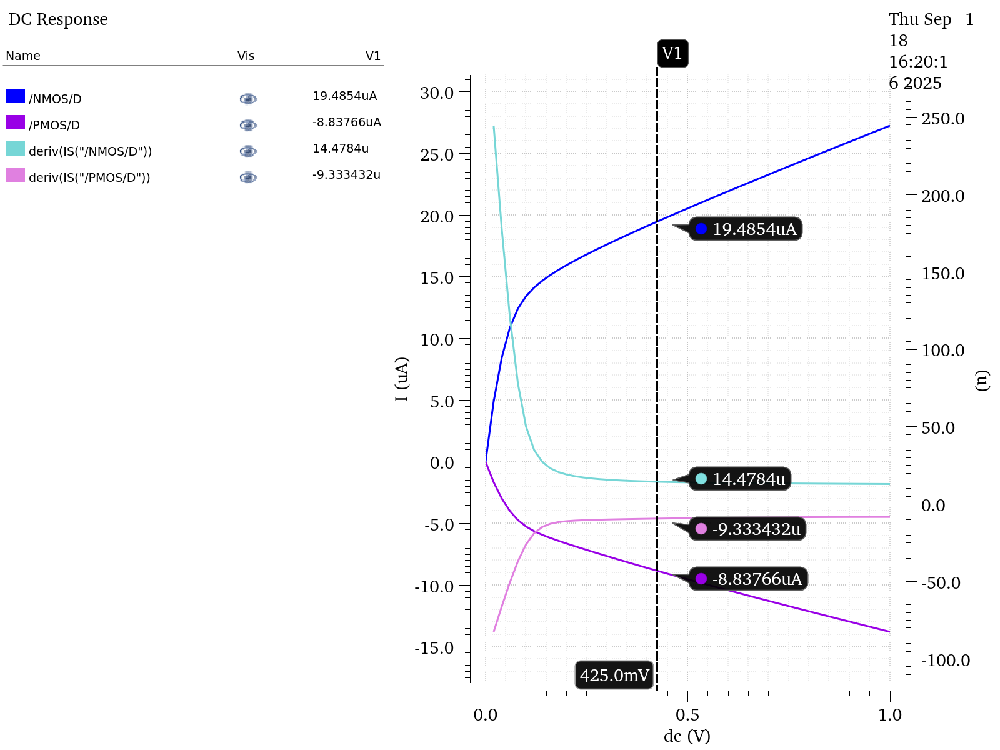
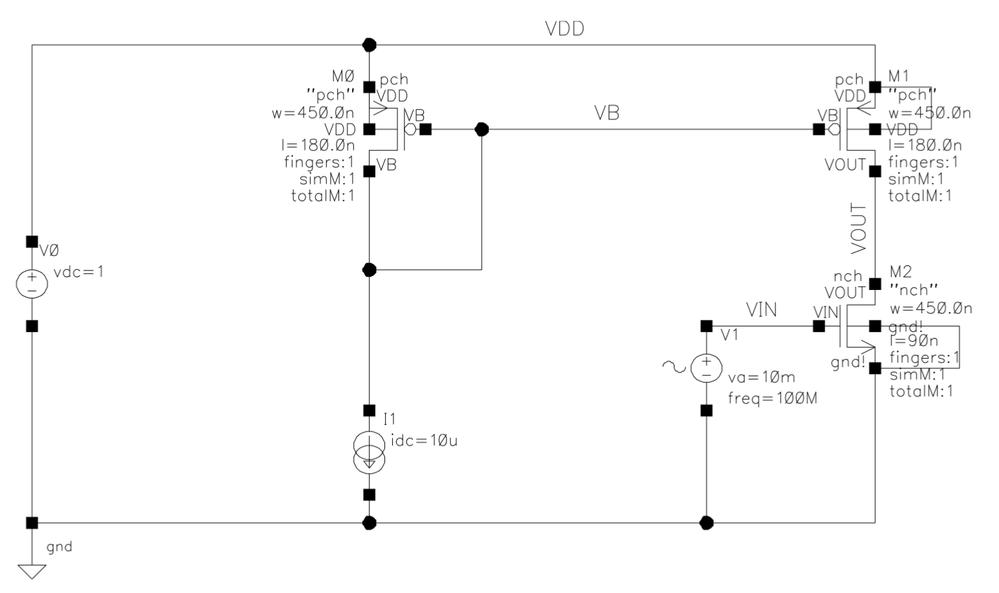
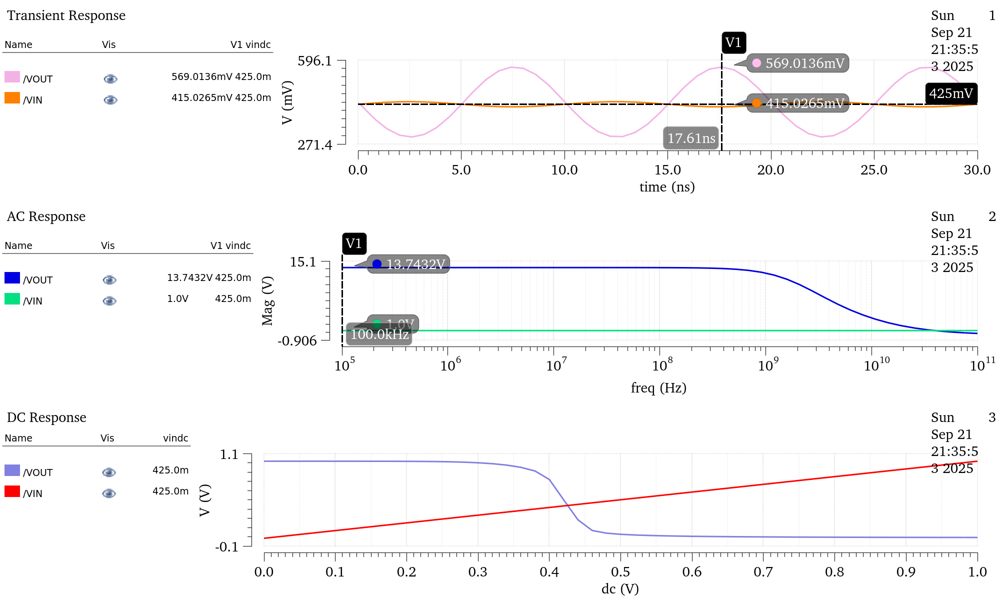
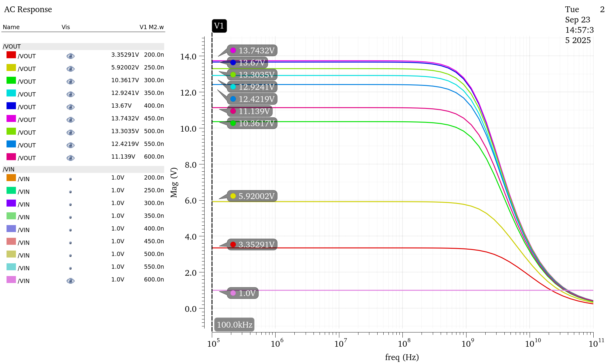

This course was heavily focused around independent lab work, and the last month of the course was dedicated to a final project completed in pairs. I am very thankful for having the pleasure of working with Eric Yates on the final project. He is simply one of the best computer engineers I have met at the U of G and I was very lucky to have been able to get to know him.
The first lab was all about Schematic entry and circuit simulation. I was dropped in head first into Cadence Virtuoso and this lab was very much a self guided exploration of the tool. Modern day electronic systems and ICs rely heavily on transistors, specifically MOSFETs using CMOS technology. MOSFETs are very versatile devices, and can be used as amplifiers, or switches. When assembled together they can make logic gates, and build large scale ICs. This lab was completed using the TSMC 65-nm CMOS technology. This laboratory was comprised of two experiments that teach the fundamentals of schematic entry and circuit simulation in Cadence Virtuoso. The first part relates to simple n-type and p-type MOSFETs. The seconds relates to a Common-source amplifier making use of the two types of MOSFETs from the first experiment. For the first part two MOSFETS were places on one schematic. They were appropriately wired up with parametric gate-source and drain-source voltages. The Schematic for the NMOS and PMOS can be seen to the right. Then a DC Simulation of the NMOS and PMOS transistors was performed. A portion of the results can be seen below. The purpose of these simulation was to characterize the MOSFETs. Some of the key values are the trans-conductance gm in microsiemens, the drain-source resistance rDS in kilo-ohms, and threshold voltage Vth in millivolts.



The second part of this fist lab was producing the schematic and testing a Common-source Amplifier. Using the small signal model of the CS amplifier and some of the values from the simulation in part one the gain of the amp was predicted. The calculated gain was Av = -15.09. Next the voltage gain was measured using transient and AC analysis. These simulation results can be compared with the calculated values above. A DC Simulation of the amplifier was also performed. A portion of the resulting plots from the simulation can be seen below. This simulation was at ambient temperature with no corner cases on the TSMC 65nm process. Additionally in part 2 of the experiment there was an attempt to increase the gain of the amplifier by 20%. A simulation was made this time the width of the transistor M1 was set as parameter and swept from 200nm to 600nm to see if any increases in gain could be made.




Lab 2 here
Lab 3 here

Project with Eric here